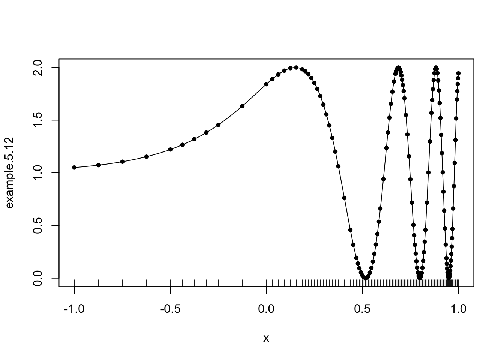
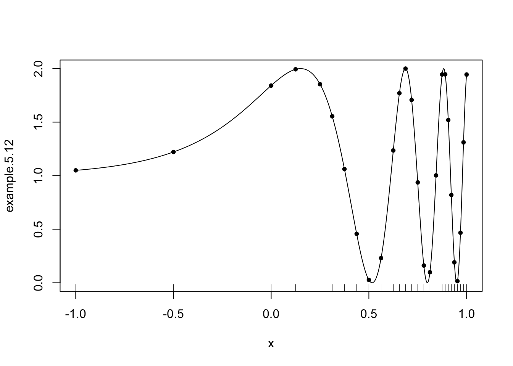
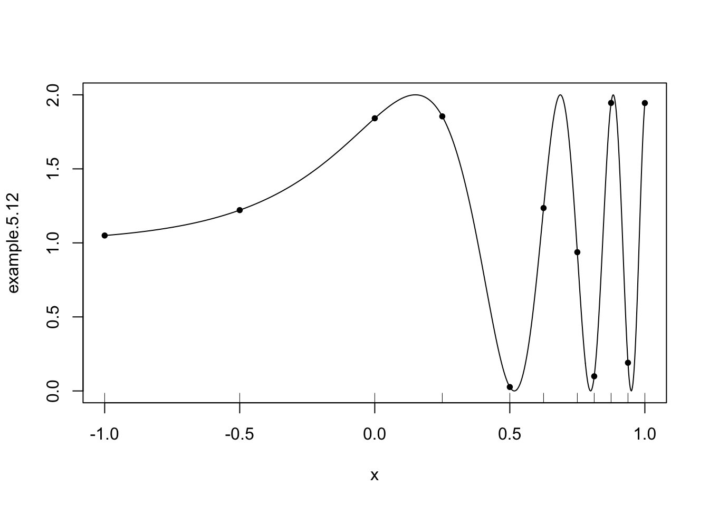
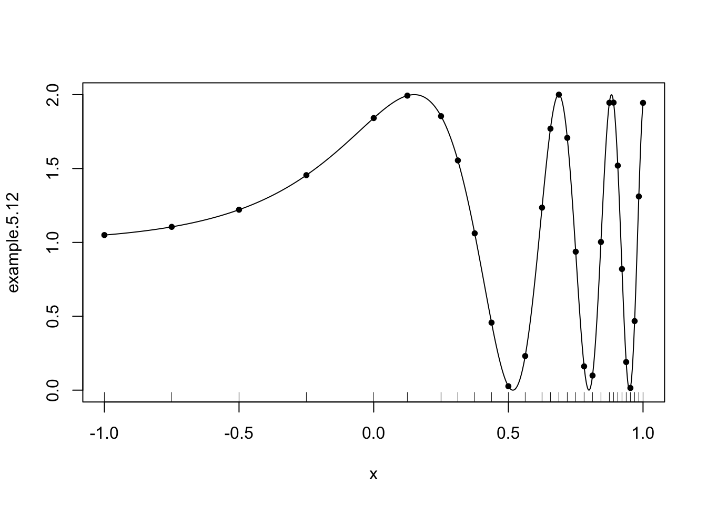

gaussquad <- function(f, a = -1, b = 1, order = 4, ...) {
foo = gausspts(order)
x = foo$roots
vals = x
x = ((b-a)*x + b + a)/2
for (k in 1:length(vals) ) vals[k] = f(x[k], ...)
return( (b-a)*sum(foo$coefs*vals)/2)
}
gausspts <- function(n=2){
if (n==1)
return( list(roots=0, coefs=2))
if (n==2)
return(list(roots=c(-1,1)*.57735026918963, coefs = c(1,1) ))
if (n==3)
return(list(roots=c(-1,0,1)*.77459666924148, coefs = c(5,8,5)/9 ))
if (n==4)
return(list(roots=c(-1,0,0,1)*.86113631159405 + c(0,-1,1,0)*0.33998104358486,
coefs = (90+c(-1,1,1,-1)*5*sqrt(30))/180))
if (n==5) {
middle = sqrt(5 - 2*sqrt(10/7))/3
outer = sqrt(5 + 2*sqrt(10/7))/3
middlew = (322 + 13*sqrt(70))/900
outerw = (322 - 13*sqrt(70))/900
return(list(roots=c(-outer,-middle,0,middle,outer), coefs=c(outerw,middlew, 128/225, middlew, outerw)))
}
else
stop("Untabulated order for Gaussian Quadrature")
}Adaptive Quadrature
accumulation
recursion
numerical
Translated from Sauer program 5.2 on p. 271
trap = function(f,a,b,...) {
return( (f(a,...) + f(b,...))*(b-a)/2)
}
simpson = function(f,a,b,...) {
mid = (b+a)/2
x = c(a,mid,b)
vals = x
for (k in 1:3) vals[k] = f(x[k],...)
return( (mid-a)*sum(vals*c(1,4,1))/3 )
}
adapquad = function(f, a=-1, b=1, tol=0.005, maxn=1000, integrator=trap, ...){
sum=0; n=1;
pointlist = c(a,b) # for keeping the history --- just for display purposes
# the first step
app = integrator(f,a,b,...)
while (n>0) {
cmid = (a[n]+b[n])/2; oldapp = app[n];
pointlist[length(pointlist)+1] = cmid
app[n] = integrator( f, a[n], cmid, ...);
app[n+1] = integrator( f, cmid, b[n], ... )
if (abs(oldapp - (app[n] + app[n+1])) < 3*tol[n] ) {
sum = sum + app[n] + app[n+1]
n = n-1
} else {
b[n+1] = b[n]; b[n] = cmid;
a[n+1] = cmid;
tol[n] = tol[n]/2; tol[n+1] = tol[n]
n = n + 1
if (n > maxn) stop("maxn exceeded.")
}
}
return(list( val=sum, pts=sort(pointlist) ) )
}Example 5.12
Use adaptive quadrature to approximate the integral \[ \int_{-1}^1 (1 + \sin( e^{3x} ) dx . \]
example.5.12 = function(x){1 + sin(exp(3*x))}Adaptive quadrature with trapezoidal rule
res = adapquad( example.5.12, a=-1, b=1, integrator=trap )
plot( example.5.12, -1, 1, n=1000 )
points( res$pts, example.5.12(res$pts), pch=20)
rug( res$pts )
Adaptive quadrature with Simpson’s rule
res = adapquad( example.5.12, a=-1, b=1, integrator=simpson )
plot( example.5.12, -1, 1, n=1000 )
points( res$pts, example.5.12(res$pts), pch=20)
rug( res$pts )
Adaptive quadrature with Gaussian quadrature
res = adapquad( example.5.12, a=-1, b=1, integrator=gaussquad )
plot( example.5.12, -1, 1, n=1000 )
points( res$pts, example.5.12(res$pts), pch=20)
rug( res$pts )
Repeating, but with a finer tolerance:
res = adapquad( example.5.12, a=-1, b=1, integrator=gaussquad, tol=0.000001 )
plot( example.5.12, -1, 1, n=1000 )
points( res$pts, example.5.12(res$pts), pch=20)
rug( res$pts )